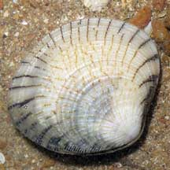
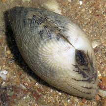
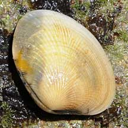
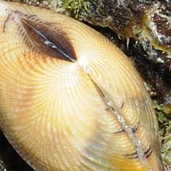
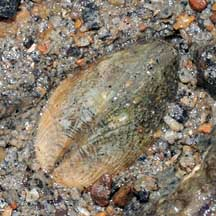
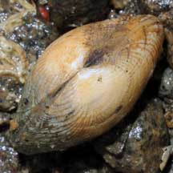
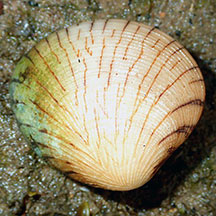

|
|
| bivalves text index | photo index |
| Phylum Mollusca > Class Bivalvia > Family Malleidae |
| Forked
venus clam Gafrarium divaricatum* Family Veneridae updated May 2020 Where seen? This clam can be quite common on some shores, among coral rubble or hidden under stones near the low water mark. Elsewhere, they are found on intertidal shores with coarse sand and gravel. Features: About 4-6cm. Shell circular with a slight pointed tip, thick and heavy with fine ribs parallel to the shell edge, that spray out or 'fork' into two separate directions from the pointed base. Colour white usually with a pattern of thin dark lines perpendicular to the shell edges. |
 Pulau Sekudu, Mar 07  |
 East Coast, Aug 09  |
 Pulau Ubin, May 08  |
| Forked venus clams on Singapore shores |
On wildsingapore
flickr
|
| Other sightings on Singapore shores |
 Berlayar Creek, Oct 17 Photo shared by Abel Yeo on facebook. |
Acknowledgements
References
|